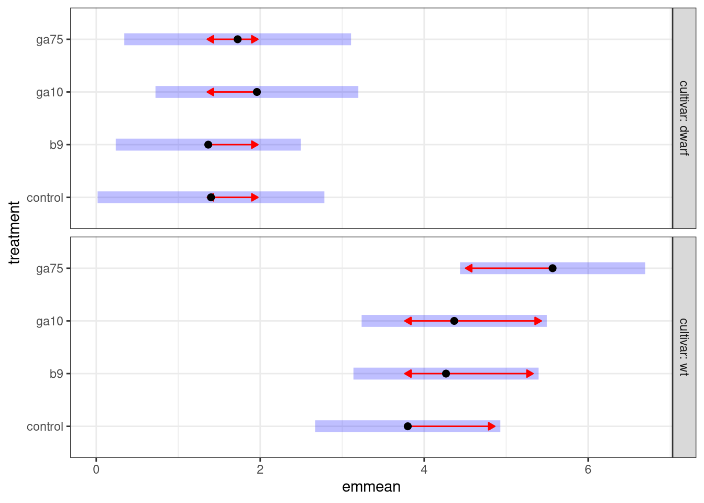
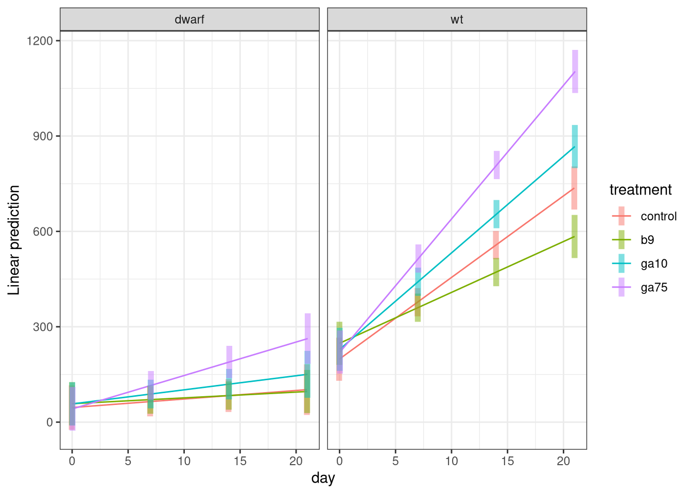
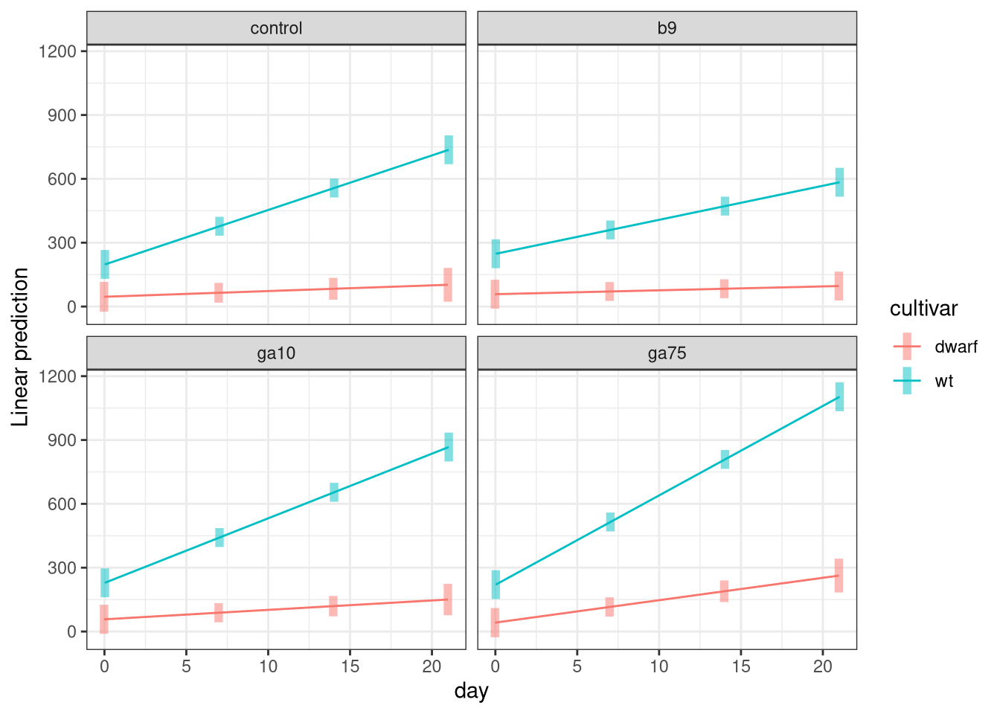

Plant Physiology Lab
Dr. Gavin Simpson and Dr. Maria Davis
October 2019
This file is hosted at: bit.ly/biol266f19
Getting started
To get started, open your web browser, head to rstudio.cloud and log in using your RStudio Cloud account.
Once you have logged in, start a New Project by clicking the button to the right of “Your Projects”

After you click the button, rstudio.cloud will deploy a new RStudio instance, which may take a minute or two, so be patient.
Once the RStudio instance is running, rename your project by clicking on the “Untitled Project” label at the top of the screen. Give the project a useful name, such as “biol 266”.

Opening a new script window
It is good practice to enter your R code into a R script. An R script is a plain text file that we save with the extension .R. All your code for the lab should go in here because
- you can save the file and all your work as you go along so you have a record of what you did,
- it is easier to edit your code and fix errors, mistakes, or typos in the script window, and
- you can share the script file if you need help to track down an error.
To start a new script, go to the File menu, then select New File > R Script

Or you can press Ctrl + Shift + Alt + N on Windows or Cmd + Shift + Option + N on a Mac.
Your RStudio screen should look like this

Installing R Packages
Once you have a new session running and named, click in the Console window by the prompt and run the code below by typing in the console exactly what is shown below and hitting Return
This will take a few minutes to complete.
Load Packages
We need to load the packages we just installed so they are ready to use. You need to do this each time you start R and want to use these packages. The installation step you just performed does not need to be each time you start R.
Click in the script window. Enter the lines of code below into the script window. The hash character # allows you to enter comments, which R will ignore.
library('readxl') # read from Excel sheets
library('tidyr') # data processing
library('dplyr') # mo data processing
library('forcats') # mo mo data processing
library('ggplot2') # plotting
library('emmeans') # for post hoc comparisons
theme_set(theme_bw()) # Set plot themeOnce you have entered all those lines of code into the script window, move the cursor to the first line or click on it, and then press the following keys:
- On Windows press Ctrl + Enter
- On Mac press Cmd + Enter
This will send the current line of code to the console window and move cursor to the start of the next line. Continue hitting Ctrl + Enter or Cmd + Enter until you have sent each line of code into the console. As you do so, R will load each package; some messages will be printed to the console, but this is OK as long as you do not see any Errors.
From now on, enter the code in the shaded grey boxes into the Script window and use Ctrl + Enter or Cmd + Enter to send the code to the Console. Whenever R produces output, it should match (or be similar to; you will see output for your data) the text shown in the outlined boxes where each line starts with ##.
Note that the output in the console won’t have the ##, these are just to indicate output in this document.
Upload data
Before we can work with the data from the experiment, we will need to upload them to our rstudio.cloud project. Make sure you have downloaded the f19ph.xlsx file from UR Courses and that you have it somewhere on your local computer. Next, make sure the Files tab is selected in the lower right quarter of the application, and locate the Upload button

Click the Upload button — this will bring up the Upload files dialogue box

Click the Choose file button — this will bring up the file chooser on your computer. In the file chooser, navigate to where you saved the f19ph.xlsx file and open it in the chooser so that the file is listed next to the Choose file button, as shown below

Once you have f19ph.xlsx showing in the dialogue box, you can click OK to upload the file to rstudio.cloud.
When you have uploaded the file, your Files pane should list the f19ph.xlsx file as shown below

Saving your work
At this point, it is worth saving your script. Find the single disk icons in the main menu or the menu for your script

Click either of these icons to save the file. The first time you do this you’ll be prompted to enter a file name — use something memorable and be sure to give it the extension .R. In the image below I named my script biol266.R.

Then click Save.
Be sure to save your work regularly during class. You can use Ctrl + s on Windows and Cmd + s on Mac to save changes you make to your script, or click on the disk icon as before.
Load Data
The experimental data exist in f19ph.xlsx, an Excel workbook. The example data I’ll use here are in two of the sheets in this workbook. You will need to know what number your sheets are in this file.
First we’ll read in the data for the wild type cultivar using the read_excel() function
col_types <- rep(c('text','numeric'), times = c(3, 9))
wt <- read_excel('f19ph.xlsx', sheet = 2, col_types = col_types)To avoid reading in incorrect data, we tell read_excel() what types of data to expect in each column of the sheet we read in — there are three text columns, followed by nine columns of numbers.
If there were no errors or messages printed to the screen then the data were loaded into R. Take a look at the data by typing the name of the object (wt) and hitting Return
## # A tibble: 24 x 12
## treatment cultivar plantid `height:0` `internodes:0` `height:7`
## <chr> <chr> <chr> <dbl> <dbl> <dbl>
## 1 control wt 1 235 4 525
## 2 control wt 2 182 3 391
## 3 control wt 3 253 3 452
## 4 control wt 4 151 3 350
## 5 control wt 5 195 3 335
## 6 control wt 6 187 4 190
## 7 ga10 wt 1 250 4 458
## 8 ga10 wt 2 220 4 345
## 9 ga10 wt 3 180 2 300
## 10 ga10 wt 4 230 4 510
## # … with 14 more rows, and 6 more variables: `internodes:7` <dbl>,
## # `height:14` <dbl>, `internodes:14` <dbl>, `height:21` <dbl>,
## # `internodes:21` <dbl>, `freshwt:21` <dbl>Your data should look similar to the output above. Namely, the example data are in a data frame with 24 rows and 12 columns.
The column names contain data; we want to extract the variable (height, internodes etc) as well as the day of each observation from the column names. The variable name and the day of observation are separated by a colon : in each column name.
Data formats
The data are also in what we call wide format — where multiple observations are in a row — but to fit a statistical model we need them in long format — where each row corresponds to a single observation.

Pivoting
We need to convert the data into long format and extract the variable and day information from the column names as we do the conversion. This operation of going from wide to long (or the reverse) is more commonly known as a pivot.
The first three columns don’t contain data (actual measurements). These columns are useful meta data, but we do not need to pivot those columns, so we’ll exclude them from the pivot.

As we want to pivot to the long format we use the pivot_longer() function. In the code block below we pass five arguments:
wt— this is the name of the object we want to pivot,-(treatment:plantid)— we don’t want to pivot those columns, so we exclude them by namenames_to = c('variable','day')— we want to create new columns with the names variable and daynames_sep = ':'— the variable name and day information are in the column names separated by:names_ptypes = list(day = integer())— we want the createddaycolumn to contain integer values not text
wt <- pivot_longer(wt,
-(treatment:plantid),
names_to = c('variable','day'),
names_sep = ':',
names_ptypes = list(day = integer()))Take a look at what we have created
## # A tibble: 216 x 6
## treatment cultivar plantid variable day value
## <chr> <chr> <chr> <chr> <int> <dbl>
## 1 control wt 1 height 0 235
## 2 control wt 1 internodes 0 4
## 3 control wt 1 height 7 525
## 4 control wt 1 internodes 7 5
## 5 control wt 1 height 14 810
## 6 control wt 1 internodes 14 10
## 7 control wt 1 height 21 1090
## 8 control wt 1 internodes 21 14
## 9 control wt 1 freshwt 21 7.2
## 10 control wt 2 height 0 182
## # … with 206 more rowsNow we have some new columns in addition to the three columns we did not pivot
variable— what was measured?day— when was it measured?value— what value did you write down for this measurement?
We have one more data processing step to perform to get the required format for the analysis. We want separate columns for the different types of variable we measured (height, internodes, freshwt). At the moment these are all contained in the single column variable. To get the format we want, we need to pivot from this long format back to a wide format, which we do using the pivot_wider() function.
As well as the name of the object we want to pivot (wt), we have to tell pivot_wider() which column contains the information for the new column names (the names_from argument), and which column contains the data or values (the values_from argument). Remember that the variable column contains the names of each variable you measured and the value column contains the measurement values.
Look at the result
## # A tibble: 96 x 7
## treatment cultivar plantid day height internodes freshwt
## <chr> <chr> <chr> <int> <dbl> <dbl> <dbl>
## 1 control wt 1 0 235 4 NA
## 2 control wt 1 7 525 5 NA
## 3 control wt 1 14 810 10 NA
## 4 control wt 1 21 1090 14 7.2
## 5 control wt 2 0 182 3 NA
## 6 control wt 2 7 391 5 NA
## 7 control wt 2 14 615 9 NA
## 8 control wt 2 21 810 12 3.8
## 9 control wt 3 0 253 3 NA
## 10 control wt 3 7 452 6 NA
## # … with 86 more rowsWe now have columns of data for height, internodes, & freshwt. The NA values in freshwt are indicators of missing data because you only measured the fresh weight of the plants on day 21.
To load in the dwarf cultivar data we repeat these steps
- reading in the data,
- pivoting from wide to long format and extracting the variable name and day information from the column headers
- pivoting from long to wide format to create a column of data for each of three variables you measured
dwarf <- read_excel('f19ph.xlsx', sheet = 4, col_types = col_types)
dwarf <- pivot_longer(dwarf, -(1:3), names_sep = ':',
names_to = c('variable','day'),
names_ptypes = list(day = integer()))
dwarf <- pivot_wider(dwarf, names_from = variable, values_from = value)
dwarf## # A tibble: 96 x 7
## treatment cultivar plantid day height internodes freshwt
## <chr> <chr> <chr> <int> <dbl> <dbl> <dbl>
## 1 control dwarf 1 0 47 4 NA
## 2 control dwarf 1 7 92 7 NA
## 3 control dwarf 1 14 97 7 NA
## 4 control dwarf 1 21 110 9 2
## 5 control dwarf 2 0 35 3 NA
## 6 control dwarf 2 7 64 5 NA
## 7 control dwarf 2 14 90 5 NA
## 8 control dwarf 2 21 NA NA NA
## 9 control dwarf 3 0 45 4 NA
## 10 control dwarf 3 7 67 5 NA
## # … with 86 more rowsNow that we have the data as we’d like it, we need to stick the two objects together, which we do with bind-rows()
So that we can draw growth lines for each individual plant, we need a unique identifier for each plant. We can achieve that by concatenating or pasting together the cultivar, treatment and plantid information, separated by underscores _
One final data processing step involves getting the coding for the treatment variable right so that the control treatment is the reference level against which the other treatments will be compared. Changing the reference level of a factor (a categorical variable) is known as releveling. We change the reference levels using
OK, that’s a lot of data processing. Let’s look at the data.
Fresh weight on day 21
We’ll start by taking a look at the fresh weight of the plants on day 21. One way to look at these data is as box plots of the weights for each combination of cultivar and treatment. To plot the data we’ll use the powerful ggplot2 package and the function ggplot(). To draw our plot we need to tell ggplot() the following information
- the name of the object that contains the data we want to plot; in our case this is
plant - we need to map variables in
plantto the axes and other visual attributes, herecolour- we want the
treatmentdata on the x axis, - we want the plant fresh weights (
freshwt) on the y axis, - we want to distinguish between the wild type and dwarf cultivar using colour
- we want the
- we need to add a layer to the plot that actually draws the box plots using
geom_boxplot(), and - we need to add some proper axis labels, using
labs()
Notice how we add layers and features to the plot using the + operator at the end of statement.
ggplot(data = plant, mapping = aes(x = treatment, y = freshwt, colour = cultivar)) +
geom_boxplot() +
labs(y = 'Fresh weight (g)', x = 'Treatment', colour = "Cultivar")## Warning: Removed 149 rows containing non-finite values (stat_boxplot).You can ignore the warning about removing some rows with missing data. If you get other warnings or your plot doesn’t look similar to the one above, double check your code for typos and if you’re still stuck ask for help.
Look at the plot you just drew and think about what the data might be telling you about
- how the various treatments might have affected the fresh weight (as a surrogate for plant biomass or size),
- whether all the treatments affected the plants in the same way, and
- whether the treatments affected the two cultivars in similar or different ways?
ANOVA
The way we plotted the data gives us a guide as to how to approach answering the questions you were just asked to think about. We have a response variable — the fresh weight of each plant on day 21, freshwt — also known as the dependent variable. We also have two independent variables that define the experimental design:
- the various control and treatments applied to the plants,
treatment, and - the type of cultivar that each plant belongs to.
The model we want to fit is a special case of a linear model that is commonly known as an analysis of variance or ANOVA.
Potential results
It is always worth thinking about the kinds of result we might expect from an statistical analysis. When considering the fresh weight data we could think of four potential types of result:
We will fit an ANOVA that allows for the most complex result — different treatment effects in the two cultivars — but we will look at the model output to see if the results are more consistent with one of the other options.
An ANOVA is a model where the independent variables are categorical variables. Categorical variables are ones where each value is one option from a set of possible values. For example we might have a variable car_colour where each value is one from the set red, blue, white, or black. Another example might be a variable river_flow, taking values none, low, medium, and high. There is no implied ordering in car colour variable so we call this a nominal categorical variable. Sometimes you might here people call this kind of variable qualitative. Where the variable has an implied ordering, like the river_flow example, we call those variables ordinal categorical variables. These may also be referred to as semi-quantitative. In R, categorical variables are known as factors.
Using R we can fit the ANOVA with the lm() function. We specify the model structure using a symbolic formula. The formula we’ll use is
freshwt ~ treatment * cultivarThe response (dependent) variable is on the left hand side of the ~ (the tilde symbol). This is the variable we wish to explain. The right hand side of the formula contains the independent variables in the model. We want to allow for different effects of the various treatments among the two cultivars — gibberellic acid might affect the dwarf cultivar more than the wild type, for example. To achieve this in addition to the main effects of treatment and cultivar we need to have the effects of the treatments interact with the effects of the cultivar. In R we indicate that we want main effects plus their interaction using the * symbol. The only other thing we need to tell R is where to find the variables named in the formula describing the model we want to fit — we do this using the data argument.
Let’s fit the ANOVA
We have stored the result of the ANOVA fit in an object named fw1. We can summarize the model fit in a couple of ways; first we look at the model summary
##
## Call:
## lm(formula = freshwt ~ cultivar * treatment, data = plant)
##
## Residuals:
## Min 1Q Median 3Q Max
## -2.7667 -0.6800 -0.0667 0.4875 3.4000
##
## Coefficients:
## Estimate Std. Error t value Pr(>|t|)
## (Intercept) 1.400000 0.681348 2.055 0.04743 *
## cultivarwt 2.400000 0.879616 2.728 0.00988 **
## treatmentb9 -0.033333 0.879616 -0.038 0.96999
## treatmentga10 0.560000 0.914124 0.613 0.54410
## treatmentga75 0.325000 0.963571 0.337 0.73791
## cultivarwt:treatmentb9 0.500000 1.180129 0.424 0.67439
## cultivarwt:treatmentga10 0.006667 1.206069 0.006 0.99562
## cultivarwt:treatmentga75 1.441667 1.243965 1.159 0.25433
## ---
## Signif. codes: 0 '***' 0.001 '**' 0.01 '*' 0.05 '.' 0.1 ' ' 1
##
## Residual standard error: 1.363 on 35 degrees of freedom
## (149 observations deleted due to missingness)
## Multiple R-squared: 0.6067, Adjusted R-squared: 0.528
## F-statistic: 7.713 on 7 and 35 DF, p-value: 1.236e-05The omnibus (overall) test of the model is summarized in the F statistic and its p value. Find this information in the output. In the example shown here, the F statistic is 7.71 on 7 and 35 degrees of freedom, with a p value of < 0.0001. This p value indicates that it would quite unlikely — less than 1 in 10,000 — that we would have observed these differences between cultivars and treatments if there were no differences between cultivars and treatments.
This test gives us some gross information about the combined effects of the treatments on the cultivars, but it doesn’t provide much detail on which treatments differ and whether there are different treatment effects in the two cultivars. To answer these questions we’ll need to do some further processing of the model to compute what are known as estimated marginal means.
Treatments vs controls
The first test we might do is to compare each treatment with the control plants. This involves calculating from the model the difference between each level of the treatment and the control. These estimated differences are uncertain so we can express this uncertainty using a confidence interval. Additionally we can do a statistical test of the null hypothesis that the difference is equal to 0 — which is the same as testing the null hypothesis of equal effects. Because the treatment effect is nested within the cultivar effect, we will estimate the difference separately for each cultivar.
We saved the result of the emmeans() in an object named fw1mm. To show the estimated marginal means we type the name of the object and hit Return
## $emmeans
## cultivar = dwarf:
## treatment emmean SE df lower.CL upper.CL
## control 1.40 0.681 35 0.0168 2.78
## b9 1.37 0.556 35 0.2373 2.50
## ga10 1.96 0.609 35 0.7228 3.20
## ga75 1.73 0.681 35 0.3418 3.11
##
## cultivar = wt:
## treatment emmean SE df lower.CL upper.CL
## control 3.80 0.556 35 2.6706 4.93
## b9 4.27 0.556 35 3.1373 5.40
## ga10 4.37 0.556 35 3.2373 5.50
## ga75 5.57 0.556 35 4.4373 6.70
##
## Confidence level used: 0.95
##
## $contrasts
## cultivar = dwarf:
## contrast estimate SE df t.ratio p.value
## b9 - control -0.0333 0.880 35 -0.038 0.9995
## ga10 - control 0.5600 0.914 35 0.613 0.8446
## ga75 - control 0.3250 0.964 35 0.337 0.9535
##
## cultivar = wt:
## contrast estimate SE df t.ratio p.value
## b9 - control 0.4667 0.787 35 0.593 0.8541
## ga10 - control 0.5667 0.787 35 0.720 0.7876
## ga75 - control 1.7667 0.787 35 2.246 0.0818
##
## P value adjustment: dunnettx method for 3 testsThe output is in two parts:
$emmeansshows the estimated marginal means offreshwtfor each level oftreatmentin each of the two cultivars, and$contrastsshows the comparison between each treatment level and the control, separately for each cultivar.
In the first part ($emmeans) the column labelled emmean is the estimated marginal mean for each level of the treatment, whilst SE is the standard error — a measure of uncertainty in the estimated value — of the emmean. The df column indicates the degrees of freedom for each of the groupings, and the columns labelled lower.CL and upper.CL contain the lower and upper limits of the confidence interval, for the stated confidence level (here is it the 95% or 0.95 level). The confidence interval is calculated using the SE data, with the interval representing the range of uncertainty in the estimated marginal means.
How do you interpret this? Well, the emmean columns are the estimated average fresh weight of a plant from that particular cultivar under each of the treatments. In the example we can see that treatment with the largest fresh weight for the dwarf cultivar is the ga10 treatment, whilst it is the ga75 treatment level in the wild type. In the dwarf cultivar we see that the estimated average fresh weight of a plant treated with b9 is slightly lower than the average for the control plants.
The kind of comparisons we just made are relatively informal. The $contrasts part of the output shows results of more formal comparisons with actual statistical tests comparing each treatment with the control. Note that the p values have been adjusted to account for there being three tests in each cultivar — this means the results shown account for the uncertainty that arises due to doing multiple tests.
Look back at the p values in the output above. Are any of the comparisons between treatment and control significantly different from 0 (assume a 95% or 0.95 level of confidence)?
We can plot the estimated marginal means using the plot() method, which might make it easier to see what the table of results means:

The plot shows the values from the emmean column as the black points, while the confidence interval is represented by the pale blue bars. The red arrows are comparison arrows, which were added using comparisons = TRUE. Take any pair of points; whether the arrows overlap is an approximate indication of whether, at the 95% or 0.95 level, the pair of points are significantly different from one another. If the arrows do not overlap for a pair of points we can conclude that the mean fresh weight of the plants is different between the pair of treatments.
Pairwise comparisons
We can do the statistical tests implied by the comparison arrows using the emmeans() function but asking for pairwise comparisons instead of treatment vs control comparisons. This is done using the pairwise option.
## $emmeans
## cultivar = dwarf:
## treatment emmean SE df lower.CL upper.CL
## control 1.40 0.681 35 0.0168 2.78
## b9 1.37 0.556 35 0.2373 2.50
## ga10 1.96 0.609 35 0.7228 3.20
## ga75 1.73 0.681 35 0.3418 3.11
##
## cultivar = wt:
## treatment emmean SE df lower.CL upper.CL
## control 3.80 0.556 35 2.6706 4.93
## b9 4.27 0.556 35 3.1373 5.40
## ga10 4.37 0.556 35 3.2373 5.50
## ga75 5.57 0.556 35 4.4373 6.70
##
## Confidence level used: 0.95
##
## $contrasts
## cultivar = dwarf:
## contrast estimate SE df t.ratio p.value
## control - b9 0.0333 0.880 35 0.038 1.0000
## control - ga10 -0.5600 0.914 35 -0.613 0.9274
## control - ga75 -0.3250 0.964 35 -0.337 0.9866
## b9 - ga10 -0.5933 0.825 35 -0.719 0.8888
## b9 - ga75 -0.3583 0.880 35 -0.407 0.9768
## ga10 - ga75 0.2350 0.914 35 0.257 0.9939
##
## cultivar = wt:
## contrast estimate SE df t.ratio p.value
## control - b9 -0.4667 0.787 35 -0.593 0.9335
## control - ga10 -0.5667 0.787 35 -0.720 0.8884
## control - ga75 -1.7667 0.787 35 -2.246 0.1310
## b9 - ga10 -0.1000 0.787 35 -0.127 0.9993
## b9 - ga75 -1.3000 0.787 35 -1.652 0.3636
## ga10 - ga75 -1.2000 0.787 35 -1.525 0.4337
##
## P value adjustment: tukey method for comparing a family of 4 estimatesAgain we get the two types of output and the $emmeans part is identical to the one we saw before (we’re estimating the same marginal mean fresh weight for each treatment). What is different is the $contrasts section, which now contains comparisons between all pairs of treatments for each cultivar. Again the p values have been adjusted to account for the multiple tests that were performed.
Are any of the pairwise comparisons significantly different?
We can compare differences between cultivars for each level of the treatment using a similar approach:
## $emmeans
## treatment = control:
## cultivar emmean SE df lower.CL upper.CL
## dwarf 1.40 0.681 35 0.0168 2.78
## wt 3.80 0.556 35 2.6706 4.93
##
## treatment = b9:
## cultivar emmean SE df lower.CL upper.CL
## dwarf 1.37 0.556 35 0.2373 2.50
## wt 4.27 0.556 35 3.1373 5.40
##
## treatment = ga10:
## cultivar emmean SE df lower.CL upper.CL
## dwarf 1.96 0.609 35 0.7228 3.20
## wt 4.37 0.556 35 3.2373 5.50
##
## treatment = ga75:
## cultivar emmean SE df lower.CL upper.CL
## dwarf 1.73 0.681 35 0.3418 3.11
## wt 5.57 0.556 35 4.4373 6.70
##
## Confidence level used: 0.95
##
## $contrasts
## treatment = control:
## contrast estimate SE df t.ratio p.value
## dwarf - wt -2.40 0.880 35 -2.728 0.0099
##
## treatment = b9:
## contrast estimate SE df t.ratio p.value
## dwarf - wt -2.90 0.787 35 -3.686 0.0008
##
## treatment = ga10:
## contrast estimate SE df t.ratio p.value
## dwarf - wt -2.41 0.825 35 -2.917 0.0061
##
## treatment = ga75:
## contrast estimate SE df t.ratio p.value
## dwarf - wt -3.84 0.880 35 -4.367 0.0001This time we get a different $emmeans section as we are now estimating the marginal mean fresh weight for each cultivar, for each level of the treatment. The $contrasts section now contains a single comparison for each treatment level as we only have a single pair of cultivars.
Are any of these pairwise comparisons significantly different? What does this suggest about the effects of the treatment and the cultivar on the fresh weight of the plants?
Plant height
We can plot the plant height data over time using the following code
ggplot(plant, aes(x = day, y = height, group = id, colour = treatment)) +
geom_point() +
geom_line() +
facet_wrap(~ cultivar) +
labs(y = 'Height (mm)', x = 'Day', colour = 'Treatment')## Warning: Removed 9 rows containing missing values (geom_point).## Warning: Removed 9 rows containing missing values (geom_path).As before, we specify the data and the mapping of variables to axes and the colour channel. One difference here is that as we want to group the data for each plant and draw lines through the observations to better show how the height of each plant changed over time. We indicate this grouping via the group aesthetic, which we set to the id variable we created earlier.
This plot has two layers:
- a point layer (
geom_point()), and - a line layer (
geom_line())
We also draw the data for the two cultivars in it’s own panel, which ggplot calls faceting. The final line adds some nice labels to the plot.
ANCOVA
The model we are fitting is sometimes called an analysis of covariance or ANCOVA, which is another special case of a linear model that can also be fitted using the lm() function. In an ANCOVA, we control for the effects of a continuous variable whilst interest is on a categorical treatment effect.
Potential results
As before, it is helpful to think about the kinds of result we might expect from the statistical analysis. When considering the plan height data we could think of five basic types of result:
In addition, some or all of the above effects could be either
- the same in both the wild-type and dwarf mutant cultivars, or
- they could differ between the wild-type and the dwarf mutant cultivars.
We specify the model structure using a symbolic formula. The formula we’ll use is
height ~ day * treatment * cultivarThe response (dependent) variable is on the left hand side of the ~ (the tilde symbol). This is the variable we wish to explain. The right hand side of the formula contains the independent variables in the model. Here, the independent variables represent the experimental setup.
Given our experimental design, the most complex model we can fit is one that allows for different growth rates (effects of day) for each treatment level for each cultivar. In other words we want to have a different growth rate for each combination of treatment and cultivar.
Such a model implies a three-way interaction between day, treatment, and cultivar. We indicate interactions in the formula using the * symbol.
We can summarize the model to look for some key diagnostics of the fit
##
## Call:
## lm(formula = height ~ day * treatment * cultivar, data = plant)
##
## Residuals:
## Min 1Q Median 3Q Max
## -386.45 -17.86 -1.87 21.72 353.55
##
## Coefficients:
## Estimate Std. Error t value Pr(>|t|)
## (Intercept) 45.8717 35.4390 1.294 0.19732
## day 2.6802 2.8989 0.925 0.35652
## treatmentb9 12.1450 49.3490 0.246 0.80590
## treatmentga10 11.5210 49.4993 0.233 0.81624
## treatmentga75 -4.0763 49.6578 -0.082 0.93467
## cultivarwt 151.9283 49.3490 3.079 0.00243 **
## day:treatmentb9 -0.8564 3.9090 -0.219 0.82685
## day:treatmentga10 1.7500 3.9945 0.438 0.66188
## day:treatmentga75 7.8468 4.0948 1.916 0.05704 .
## day:cultivarwt 22.9698 3.9090 5.876 2.22e-08 ***
## treatmentb9:cultivarwt 37.9884 69.2396 0.549 0.58398
## treatmentga10:cultivarwt 19.6790 69.3468 0.284 0.77693
## treatmentga75:cultivarwt 26.6763 69.4601 0.384 0.70143
## day:treatmentb9:cultivarwt -8.7912 5.3884 -1.632 0.10467
## day:treatmentga10:cultivarwt 2.9810 5.4507 0.547 0.58518
## day:treatmentga75:cultivarwt 8.5366 5.5246 1.545 0.12420
## ---
## Signif. codes: 0 '***' 0.001 '**' 0.01 '*' 0.05 '.' 0.1 ' ' 1
##
## Residual standard error: 100.5 on 167 degrees of freedom
## (9 observations deleted due to missingness)
## Multiple R-squared: 0.8967, Adjusted R-squared: 0.8874
## F-statistic: 96.61 on 15 and 167 DF, p-value: < 2.2e-16Most of this isn’t very helpful in this state, except the omnibus F test which indicates if the total variance explained by all the model terms is significantly large relative to the unexplained variance.
Treatments vs controls
To get more interpretable output we will again use estimate marginal means, but with one slight difference; this time we are interested in the linear effect of day, a continuous variable, as well as the treatment and cultivar effects. The day effect will be represented by straight lines (regression lines), the slopes of which reflect the average growth rate of plants in the combinations of treatments and cultivars. These lines are often called trends hence we use the emtrends() function to estimate the marginal trends instead of the marginal means.
As before we will start by comparing the treated plants with the control plants. This time however we need to indicate the trend variable via argument var. In our case the trend variable is day (which is indicated by the name in quotes)
## $emtrends
## cultivar = dwarf:
## treatment day.trend SE df lower.CL upper.CL
## control 2.68 2.90 167 -3.043 8.40
## b9 1.82 2.62 167 -3.354 7.00
## ga10 4.43 2.75 167 -0.995 9.86
## ga75 10.53 2.89 167 4.817 16.24
##
## cultivar = wt:
## treatment day.trend SE df lower.CL upper.CL
## control 25.65 2.62 167 20.473 30.83
## b9 16.00 2.62 167 10.825 21.18
## ga10 30.38 2.62 167 25.204 35.56
## ga75 42.03 2.62 167 36.856 47.21
##
## Confidence level used: 0.95
##
## $contrasts
## cultivar = dwarf:
## contrast estimate SE df t.ratio p.value
## b9 - control -0.856 3.91 167 -0.219 0.9809
## ga10 - control 1.750 3.99 167 0.438 0.9202
## ga75 - control 7.847 4.09 167 1.916 0.1453
##
## cultivar = wt:
## contrast estimate SE df t.ratio p.value
## b9 - control -9.648 3.71 167 -2.601 0.0281
## ga10 - control 4.731 3.71 167 1.276 0.4391
## ga75 - control 16.383 3.71 167 4.418 0.0001
##
## P value adjustment: dunnettx method for 3 testsYou should be familiar with this output now. The $emtrends section contains similar outputs to the $emmeans sections we looked at earlier when analyzing the fresh weight of the plants. The main difference is in the interpretation of the numbers in the day.trend column, which replaces the emmean from before. The day.trend column contains estimates of the slope of the regression line for the day variable.
The numbers in the column are the estimated change in the height of the plant for a single day of growth:
- If the
day.trendnumber is positive it means the plants in a treatment group increased in height over the experiment, and - if the
day.trendnumber is negative it means the plants in a treatment group decreased in height over the experiment.
The $contrasts section contains the same kind of comparisons of a treatments vs controls. Remember here that the estimate column contains the estimated difference in the slopes (growth rates) of the stated treatment and the control group. Hence the null hypothesis being tested is that the difference in slopes is equal to zero.
- A negative value in the
estimatecolumn means the average change in height in the stated treatment was lower than in the control group. In other words, the plants in that treatment group grew more slowly on average than the plants in the control group, and - A positive value in the
estimatecolumn means the plants in the that treatment group grew, on average, at a faster rate than plants in the control group.
As before, we can plot these estimated marginal trends using the plot() method:

This plot is similar to one we created earlier when we looked at the fresh weight of the plants:
- the black points are the estimated growth rates (regression slopes) for each treatment group,
- the 95% confidence interval around the estimated growth rate is shown by the pale blue bar, and
- the red arrows are approximate pairwise comparison regions — if arrows for a pair of treatments overlap one another we fail to reject the null hypothesis of equal growth rates for plants in the two treatments.
The main difference in this plot is that we no longer show the estimated marginal mean on the x axis. Instead the slope of the regression line (the growth rate) is plotted on the x axis. Remember how we interpret these numbers: the values are the estimated change, on average, in the height of a plant in single day of growth.
All this talk of estimated trends or slopes may be a little opaque, but we can plot the estimated regression lines to visualize the average growth rates of plants in each of the treatment groups using the emmip() function:

Here the formula means you want to show the treatment effects against day separately for each cultivar. The cov.reduce = FALSE part means that we want to plot for all values of day so that we get the full regression lines. Confidence intervals are added with CIs = TRUE — if you want to turn them off use CIs = FALSE.
Pairwise comparisons
If you want formal comparisons of the growth rates for all pairs of treatments, we can also do all pairwise comparisons using the emtrends() function by using the pairwise option instead of trt-vs-ctrl. Firstly, we’ll compare the growth rates for all pairs of treatment groups, separately for each cultivar
## cultivar = dwarf:
## contrast estimate SE df t.ratio p.value
## control - b9 0.856 3.91 167 0.219 0.9963
## control - ga10 -1.750 3.99 167 -0.438 0.9718
## control - ga75 -7.847 4.09 167 -1.916 0.2252
## b9 - ga10 -2.606 3.80 167 -0.686 0.9023
## b9 - ga75 -8.703 3.90 167 -2.229 0.1196
## ga10 - ga75 -6.097 3.99 167 -1.528 0.4230
##
## cultivar = wt:
## contrast estimate SE df t.ratio p.value
## control - b9 9.648 3.71 167 2.601 0.0492
## control - ga10 -4.731 3.71 167 -1.276 0.5797
## control - ga75 -16.383 3.71 167 -4.418 0.0001
## b9 - ga10 -14.379 3.71 167 -3.877 0.0009
## b9 - ga75 -26.031 3.71 167 -7.019 <.0001
## ga10 - ga75 -11.652 3.71 167 -3.142 0.0106
##
## P value adjustment: tukey method for comparing a family of 4 estimatesHere, to save space we only show the pairwise comparisons (the $contrasts section) as the $emtrends section repeats the one from earlier in this analysis.
If we’re interested in comparing the growth rates of the two cultivars, we need to do this separately for each treatment. We can do these comparisons with emtrends() by reverting the order in which we specify treatment and cultivar:
## $emtrends
## treatment = control:
## cultivar day.trend SE df lower.CL upper.CL
## dwarf 2.68 2.90 167 -3.043 8.40
## wt 25.65 2.62 167 20.473 30.83
##
## treatment = b9:
## cultivar day.trend SE df lower.CL upper.CL
## dwarf 1.82 2.62 167 -3.354 7.00
## wt 16.00 2.62 167 10.825 21.18
##
## treatment = ga10:
## cultivar day.trend SE df lower.CL upper.CL
## dwarf 4.43 2.75 167 -0.995 9.86
## wt 30.38 2.62 167 25.204 35.56
##
## treatment = ga75:
## cultivar day.trend SE df lower.CL upper.CL
## dwarf 10.53 2.89 167 4.817 16.24
## wt 42.03 2.62 167 36.856 47.21
##
## Confidence level used: 0.95
##
## $contrasts
## treatment = control:
## contrast estimate SE df t.ratio p.value
## dwarf - wt -23.0 3.91 167 -5.876 <.0001
##
## treatment = b9:
## contrast estimate SE df t.ratio p.value
## dwarf - wt -14.2 3.71 167 -3.823 0.0002
##
## treatment = ga10:
## contrast estimate SE df t.ratio p.value
## dwarf - wt -26.0 3.80 167 -6.832 <.0001
##
## treatment = ga75:
## contrast estimate SE df t.ratio p.value
## dwarf - wt -31.5 3.90 167 -8.070 <.0001This time we show the full output as the $emtrends section now contains the estimated daily growth rates (the daily change in plant height) for each cultivar in each of the treatment groups.
The $contrasts section contains compares the daily change in height of the two cultivars for each treatment group. Remember there is only a single pairwise comparison for each treatment group as we only have two cultivars to compare.
We can visualize the last set of comparisons using the emmip() function as we did previously, but now we use a different arrangement of the variables in the formula

Are any of these pairwise comparisons statistically significant? What does this suggest about the effects of the treatment and the cultivar on the growth rates of the plants?
Number of internodes
Exercise for the students.
Exporting images & files
To save a plot to a file, click on the Plots tab in the lower right window, and use the arrow icons to page through the plots to the one you want. Then click the Export

From the menu that appears choose Save as Image…

This brings up the Save Plot as Image dialogue box. Make the following changes:
- In the Image format box, select PNG
- In the File name box enter the file name you want for the image, include the
.pngextension - Change the height and width to suit
- You can set the height and width in pixel in the boxes to the top right of the dialogue box. If you change these you need to click the Update Preview button to redraw the plot
- Alternatively, you can use the hotspot to the bottom right corner of the plot to drag to resize. Click the Update Preview button to redraw the plot to the desired size

When you have made the required changes, click Save.
To export saved images or your script to your local machine, select the Files tab in the lower right window

Check the boxes next to the files you wish to export (download) as shown above, and then click the More button in the menu and select the Export… option.

Enter a filename — if you are exporting more than one file, RStudio will compress all the files into a single ZIP archive — if needed, but the provided name should be OK. Then click Download to download the file or the ZIP archive.
Logging Off
Your work will be saved in your rstudio.cloud workspace for some time after the lab. You will be able to resume from where you left off if you log in to your workspace at a late time. To be sure that the latest state of your work is saved, it would be best to log out of rstudio.cloud at the end of class today.
Locate your user name in the top right of the screen

Click your user name to open the menu

Click “Log out” to securely log out of rstudio.cloud.
Final thoughts
The statistical models shown here are intended to give you a flavour of the sorts of analysis that could be applied to these data. The analysis is necessarily incomplete and simplified because
- we don’t have time in a single lab class to go through all the model evaluation we would need to do to assure ourselves that the inferences — the estimates from the models and associated intervals and p values — are valid and do not violate the assumptions of the methods we used, and
- the statistical methods needed to fully analyze these data require techniques you won’t begin to cover until you take BIOL 440 Modelling Biological Data with Dr. Mark Vanderwel.
Aspects of the data that we haven’t considered or simply ignored are:
What if the growth of the plants is non-linear? Our models assumed linear growth but if the growth appears to speed up or slow down over the course of the experiment, our model will give biased estimates of the growth rates.
We assumed that the individual measurements were independent of one another. However, you repeatedly measured the same plants, within your groups, over the course of the experiment. The observations for any one plant are, all else being equal, more likely to be similar to one another than they are to another plant. The result of repeatedly measuring the same individuals over time is that we have fewer observations than is implied by the number of rows in the data set. We would need to use a repeated measures ANOVA or, better still, a mixed modelling approach to account for the lack of independence. If you take BIOL 440 with Dr. Vanderwel you will learn about mixed models.
Variables such a plant height and fresh weight are continuous variables. They also have a fixed zero point — you can’t have a plant with negative height or weight (in fact you can’t measure a plant with zero height or weight either!). Data like this have what we call a non-constant mean-variance relationship — as we increase in height or weight we expect the variation about the mean or expected value to increase. Think about it, if we had a zero height plant there is no variation about that value as there is no plant. Hence as we increase height or weight the spread of the data must increase. This is known as heteroscedasticity. Also, we could extrapolate from our linear models and predict negative weight and height plants, which doesn’t make sense. The class of models called generalized linear models would allow us to handle these features of the data. You’ll learn about these models too if you take BIOL 440!